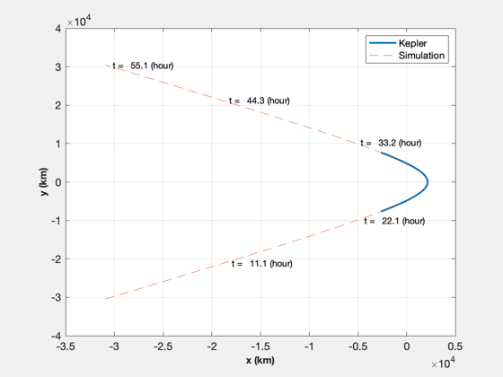
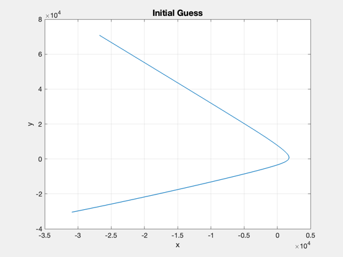
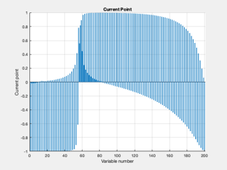
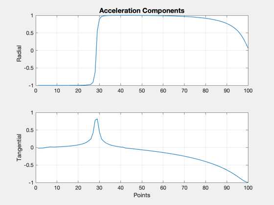
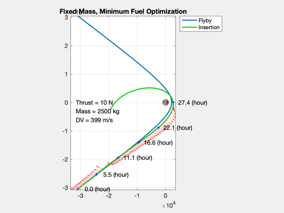
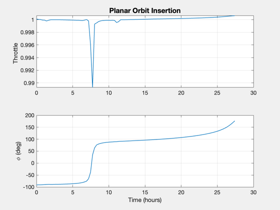
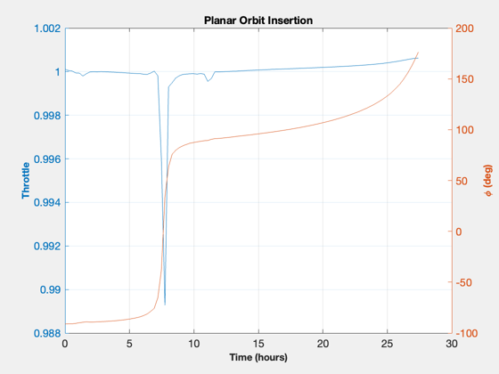
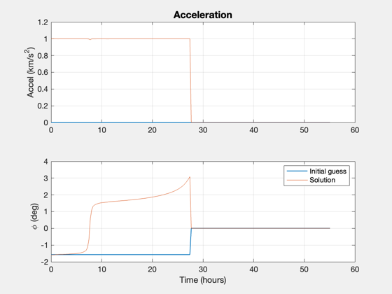

Contents
Simulate an optimal approach and orbit insertion at Pluto (fmincon)
Treat the problem as planar. Models a fixed mass. fmincon is used to find the optimal trajectory. This optimization is on the slow side and may take several hundred iterations.
Parameter space: 1. how long a time is allocated for the insertion burn (fTime) 2. the number of points along the trajectory 3. number of optimization iterations, or tolerances
Example solutions: 3500 kg / 40 or 20 N / fTime = 3 - coast time in trajectory 3000 kg / 15 N / 3 Note: lower thrust may require less mass, more points
The cost, f(x), is the total acceleration required for the maneuver. The constraints, or Feasibility, are that the acceleration magnitude is less than the maximum and that the final state is achieved at the endpoint.
Example output: First-order Norm of Iter F-count f(x) Feasibility optimality step 271 56026 8.140240e+01 5.301e-12 8.410e-01 3.252e-03
------------------------------------------------------------------------ See also ApproachCost2DMag, ApproachConst2DIneq, Simulate2DApproach ------------------------------------------------------------------------
%-------------------------------------------------------------------------- % Copyright (c) 2016 Princeton Satellite Systems, Inc. % All rights reserved. %-------------------------------------------------------------------------- % Since 2017.1 % 2024.1 Fix bug in vInf, vEsc should be squared %-------------------------------------------------------------------------- Watermark([1 1 1]); % for plot inversion if( ~HasOptimizationToolbox ) error('You need the MATLAB optimizaton toolbox to run this script.'); end
Problem parameters
Optimization parameters
maxIter = 500; fTime = 2.5; % factor times the impulse time for executing burn % Spacecraft parameters mass = 2500; % fixed mass (kg) thrust = 10; % fixed thrust (N) % Target orbit parameters h = 1000; % apogee hC = 250; % perigee
Setup
Constants
rE = Constant('equatorial radius pluto'); mu = Constant('mu pluto'); aMax = thrust*0.001/mass; % km/s2 % Calculate target orbit [sma,ecc] = RPRA2AE(rE+hC,rE+h); vEll = VOrbit(rE+h,sma,mu); rP = rE + h; % r of passage % Encounter velocity (incoming trajectory) vEsc = VEscape( rP, mu ); vEnc = 1.06*vEsc; vInf = sqrt(vEnc.^2 - vEsc^2); % v-infinity % Change from encounter velocity to apogee - instantaneous burn dV = vEnc-vEll; % Approx time to do delta-V at our fixed thrust level impT = dV*mass*1000/thrust; dVTime = fTime*impT; % Generate incoming trajectory orbital elements (hyperbola) via Kepler smaP = -mu/vInf^2; eccP = 1 - rP/smaP; f = 0.76*acos(-1/eccP); m = Nu2M(eccP,f); m = linspace(-m,m); r = zeros(3,100); for j = 1:length(m) el = [smaP 0 0 0 eccP m(j)]; r(:,j) = El2RV( el, [], mu ); end % Plot the flyby (if no delta-V is applied) NewFig('Pluto flyby') plot(r(1,:),r(2,:),'linewidth',2); hold on grid on XLabelS('x (km)'); YLabelS('y (km)'); % Compute the true anomaly to reach target anomaly in dVTime time fTarget = 0.0; f0 = TrueAnomalyStartHyperbola(smaP,eccP,dVTime,fTarget,mu); nPts = 200; % 100 pts t = linspace(0,TimeOfFlightHyperbola(smaP,eccP,-f0,f0,mu),nPts); %nPts = length(t); m0 = Nu2M( eccP,f0 ); [r, v] = El2RV( [smaP 0 0 0 eccP m0], [], mu ); % Convert velocity to planar coordinates (u,v) uR = Unit(r); uT = Cross([0;0;1],uR); u = Dot(uR,v); v = Dot(uT,v); % Initial condition x0 = [Mag(r);u;v;atan2(r(2),r(1))]; % Verify the simulation for zero acceleration acc = zeros(1,length(t)); % acceleration phi = zeros(1,length(t)); % thrust angle d.mu = mu; d.aMax = aMax; xZ = Simulate2DApproach( t, x0, phi, acc, d ); plot(xZ(1,:),xZ(2,:),'--'); m = nPts/5; j = [1:m:nPts nPts]; [tS,~,tU] = TimeLabl(t); for k = 2:length(j) i = j(k); s = sprintf(' t = %6.1f (%s)',tS(i),tU); text(xZ(1,i),xZ(2,i),s); end legend('Kepler','Simulation') drawnow
Set up the powered orbit insertion optimization
The goal is to achieve the insertion orbit at the end of the burn. The cost is the total acceleration.
% Target condition: elliptical orbital velocity at rP xF = [rP;0;vEll]; % Step at which you should be at xF nF = length(t)/2; opts = optimset( 'Display','iter-detailed',... 'maxiter',maxIter,... 'algorithm','interior-point',... 'TolFun',1e-2,... 'TolCon',0.1,... 'TolX',1e-4,... 'PlotFcns',@optimplotx,... 'MaxFunEvals',300000); costFun = @(u) ApproachCost2DMag(u); constFun = @(u) ApproachConst2DIneq(u,d,t(1:nF),x0,xF); % Lower and upper bounds oN = ones(1,nF); lB = [-1*oN; -1*oN]; uB = [oN; oN]; % Initial solution: start with negative radial thrust to avoid a swingby of % Pluto, which confuses the simulation. acc0 = oN; u0 = [-oN;0*oN]; % [radial;tangential] %Plot2D(1:nF,u0,'Points',{'Radial','Tangential'},'Initial Acceleration') phi0 = atan2(u0(1,:),u0(2,:)); traj0 = Simulate2DApproach( t, x0, [phi0 0*oN], [acc0 0*oN], d ); Plot2D(traj0(1,:),traj0(2,:),'x','y','Initial Guess') drawnow
600.01
732.83
 Run fmincon to calculate the optimal decision variables
tic [u,fval,eflag,output] = fmincon(costFun,u0,[],[],[],[],lB,uB,constFun,opts); toc u(abs(u)<1e-3) = 0; Plot2D(1:nF,u,'Points',{'Radial','Tangential'},'Acceleration Components')
Initial point X0 is not between bounds LB and UB;
FMINCON shifted X0 to strictly satisfy the bounds.
First-order Norm of
Iter F-count f(x) Feasibility optimality step
0 201 1.000000e+01 9.511e-01 1.040e+00
1 404 9.855420e+00 9.089e-01 1.516e+00 1.175e+00
2 612 8.627960e+00 7.187e-01 6.067e-01 2.940e-01
3 816 9.169625e+00 7.158e-01 9.379e-01 1.399e-01
4 1021 9.246307e+00 4.809e-01 6.778e-01 2.848e-01
5 1227 1.492080e+01 4.170e-01 6.925e-01 9.533e-01
6 1433 2.079333e+01 4.248e-01 7.188e-01 8.600e-01
7 1639 2.708589e+01 4.242e-01 8.056e-01 8.074e-01
8 1845 3.288163e+01 4.217e-01 7.971e-01 7.604e-01
9 2052 3.450278e+01 4.224e-01 7.825e-01 3.883e-01
10 2258 3.657576e+01 4.221e-01 7.912e-01 3.818e-01
11 2462 3.784947e+01 4.199e-01 1.215e+00 1.714e-01
12 2667 3.992462e+01 4.189e-01 8.400e-01 3.517e-01
13 2871 4.115429e+01 4.169e-01 1.357e+00 1.620e-01
14 3076 4.322313e+01 4.152e-01 8.331e-01 3.283e-01
15 3279 4.552835e+01 4.117e-01 1.269e+00 3.022e-01
16 3485 4.766957e+01 4.095e-01 8.125e-01 3.305e-01
17 3688 4.984772e+01 4.065e-01 9.611e-01 2.693e-01
18 3894 5.166196e+01 4.041e-01 8.358e-01 3.577e-01
19 4097 5.368943e+01 4.015e-01 1.390e+00 2.484e-01
20 4300 5.492509e+01 3.999e-01 1.423e+00 1.671e-01
21 4504 5.571400e+01 3.990e-01 1.441e+00 1.136e-01
22 4709 5.654259e+01 3.974e-01 1.002e+00 2.847e-01
23 4912 5.812407e+01 3.954e-01 1.056e+00 2.151e-01
24 5116 5.933829e+01 3.940e-01 1.259e+00 1.665e-01
25 5321 6.088653e+01 3.914e-01 9.539e-01 4.438e-01
26 5524 6.198172e+01 3.901e-01 9.813e-01 1.422e-01
27 5728 6.312914e+01 3.887e-01 1.008e+00 1.582e-01
28 5932 6.437608e+01 3.873e-01 1.207e+00 1.811e-01
29 6138 6.478036e+01 3.862e-01 9.834e-01 2.314e-01
30 6341 6.596643e+01 3.848e-01 1.259e+00 1.704e-01
First-order Norm of
Iter F-count f(x) Feasibility optimality step
31 6545 6.734614e+01 3.834e-01 1.523e+00 2.040e-01
32 6750 6.853683e+01 3.808e-01 1.008e+00 4.433e-01
33 6953 6.969508e+01 3.797e-01 1.037e+00 1.751e-01
34 7157 7.078433e+01 3.786e-01 1.066e+00 1.712e-01
35 7361 7.176073e+01 3.777e-01 1.093e+00 1.442e-01
36 7566 7.256858e+01 3.759e-01 9.856e-01 3.314e-01
37 7770 7.330543e+01 3.752e-01 9.606e-01 1.197e-01
38 7973 7.405992e+01 3.746e-01 9.679e-01 1.355e-01
39 8176 7.455505e+01 3.742e-01 1.067e+00 8.892e-02
40 8380 7.493849e+01 3.739e-01 1.137e+00 6.800e-02
41 8585 7.532454e+01 3.733e-01 8.650e-01 2.183e-01
42 8788 7.616046e+01 3.726e-01 9.281e-01 1.426e-01
43 8991 7.703016e+01 3.720e-01 9.055e-01 1.525e-01
44 9194 7.769486e+01 3.715e-01 1.124e+00 1.131e-01
45 9398 7.830733e+01 3.710e-01 9.867e-01 1.021e-01
46 9604 7.860404e+01 3.709e-01 8.034e-01 2.121e-01
47 9806 7.976916e+01 3.701e-01 8.766e-01 2.044e-01
48 10009 8.044248e+01 3.696e-01 8.923e-01 1.202e-01
49 10213 8.080860e+01 3.694e-01 9.065e-01 7.035e-02
50 10418 8.116466e+01 3.689e-01 8.905e-01 2.309e-01
51 10621 8.166794e+01 3.686e-01 9.379e-01 9.517e-02
52 10824 8.208080e+01 3.684e-01 9.039e-01 8.486e-02
53 11029 8.265646e+01 3.675e-01 8.419e-01 2.204e-01
54 11232 8.317005e+01 3.672e-01 8.202e-01 9.329e-02
55 11436 8.361580e+01 3.670e-01 8.200e-01 8.631e-02
56 11642 8.377611e+01 3.670e-01 7.363e-01 1.790e-01
57 11845 8.424129e+01 3.668e-01 7.142e-01 9.412e-02
58 12051 8.447760e+01 3.664e-01 6.893e-01 1.671e-01
59 12254 8.489110e+01 3.662e-01 7.268e-01 8.874e-02
60 12460 8.518125e+01 3.660e-01 8.133e-01 1.650e-01
First-order Norm of
Iter F-count f(x) Feasibility optimality step
61 12663 8.555697e+01 3.658e-01 8.453e-01 7.695e-02
62 12869 8.579338e+01 3.656e-01 8.094e-01 1.588e-01
63 13072 8.610777e+01 3.654e-01 7.938e-01 6.550e-02
64 13276 8.647404e+01 3.652e-01 7.781e-01 7.884e-02
65 13480 8.681429e+01 3.650e-01 7.690e-01 7.256e-02
66 13686 8.712799e+01 3.648e-01 6.917e-01 1.851e-01
67 13888 8.749273e+01 3.647e-01 6.154e-01 7.430e-02
68 14092 8.777420e+01 3.645e-01 6.312e-01 6.178e-02
69 14298 8.800216e+01 3.643e-01 6.248e-01 1.425e-01
70 14502 8.814709e+01 3.642e-01 6.041e-01 3.395e-02
71 14707 8.838838e+01 3.634e-01 8.000e-01 1.603e-01
72 14914 8.854968e+01 3.636e-01 6.412e-01 9.891e-02
73 15117 8.871294e+01 3.635e-01 6.409e-01 4.574e-02
74 15323 8.885534e+01 3.632e-01 8.218e-01 8.493e-02
75 15526 8.900836e+01 3.632e-01 7.923e-01 4.306e-02
76 15732 8.915260e+01 3.633e-01 6.067e-01 8.620e-02
77 15934 8.944860e+01 3.632e-01 6.271e-01 7.860e-02
78 16141 8.961513e+01 3.632e-01 6.949e-01 7.419e-02
79 16344 8.977023e+01 3.631e-01 7.172e-01 4.604e-02
80 16550 8.994396e+01 3.631e-01 7.168e-01 6.858e-02
81 16753 9.010974e+01 3.630e-01 7.165e-01 5.181e-02
82 16958 9.037209e+01 3.629e-01 6.693e-01 1.268e-01
83 17161 9.050936e+01 3.629e-01 6.743e-01 3.731e-02
84 17366 9.076418e+01 3.629e-01 4.885e-01 1.071e-01
85 17570 9.089985e+01 3.628e-01 4.141e-01 3.835e-02
86 17775 9.116192e+01 3.627e-01 4.523e-01 1.122e-01
87 17979 9.129583e+01 3.627e-01 3.880e-01 3.764e-02
88 18184 9.155738e+01 3.626e-01 3.794e-01 1.103e-01
89 18388 9.162774e+01 3.625e-01 3.502e-01 2.154e-02
90 18593 9.175743e+01 3.625e-01 6.891e-01 6.452e-02
First-order Norm of
Iter F-count f(x) Feasibility optimality step
91 18796 9.190074e+01 3.624e-01 6.761e-01 4.506e-02
92 19001 9.213238e+01 3.623e-01 6.251e-01 1.046e-01
93 19205 9.225482e+01 3.622e-01 6.160e-01 3.550e-02
94 19411 9.236779e+01 3.623e-01 8.203e-01 8.479e-02
95 19614 9.249018e+01 3.622e-01 7.635e-01 3.745e-02
96 19820 9.260888e+01 3.621e-01 6.324e-01 8.006e-02
97 20023 9.273108e+01 3.621e-01 6.569e-01 3.802e-02
98 20227 9.291657e+01 3.621e-01 6.428e-01 5.730e-02
99 20431 9.308428e+01 3.620e-01 6.935e-01 5.251e-02
100 20635 9.323416e+01 3.620e-01 7.183e-01 4.427e-02
101 20841 9.338479e+01 3.619e-01 6.593e-01 9.663e-02
102 21044 9.353426e+01 3.619e-01 4.932e-01 4.440e-02
103 21248 9.366823e+01 3.619e-01 4.574e-01 4.041e-02
104 21452 9.381101e+01 3.618e-01 4.479e-01 4.584e-02
105 21656 9.396918e+01 3.618e-01 4.995e-01 4.772e-02
106 21862 9.413508e+01 3.617e-01 3.470e-01 9.355e-02
107 22065 9.429163e+01 3.617e-01 3.423e-01 4.407e-02
108 22269 9.444122e+01 3.616e-01 4.069e-01 4.825e-02
109 22473 9.456056e+01 3.616e-01 4.224e-01 4.065e-02
110 22677 9.466555e+01 3.616e-01 4.828e-01 3.926e-02
111 22881 9.477665e+01 3.615e-01 5.110e-01 3.935e-02
112 23087 9.493684e+01 3.615e-01 3.230e-01 9.823e-02
113 23291 9.499324e+01 3.615e-01 3.180e-01 1.782e-02
114 23497 9.507076e+01 3.613e-01 2.817e-01 5.911e-02
115 23699 9.518550e+01 3.613e-01 2.704e-01 3.797e-02
116 23906 9.525688e+01 3.611e-01 2.431e-01 5.304e-02
117 24108 9.536314e+01 3.611e-01 2.535e-01 3.385e-02
118 24315 9.543227e+01 3.611e-01 2.323e-01 4.794e-02
119 24517 9.553932e+01 3.611e-01 2.369e-01 3.497e-02
120 24721 9.568624e+01 3.611e-01 2.586e-01 5.056e-02
First-order Norm of
Iter F-count f(x) Feasibility optimality step
121 24928 9.577855e+01 3.611e-01 2.450e-01 6.732e-02
122 25130 9.592175e+01 3.611e-01 2.291e-01 4.912e-02
123 25337 9.601085e+01 3.611e-01 2.339e-01 5.703e-02
124 25539 9.614475e+01 3.610e-01 2.492e-01 4.489e-02
125 25746 9.623359e+01 3.610e-01 3.971e-01 5.269e-02
126 25948 9.636960e+01 3.610e-01 4.267e-01 4.897e-02
127 26155 9.646771e+01 3.610e-01 2.452e-01 6.041e-02
128 26358 9.654359e+01 3.610e-01 2.426e-01 3.130e-02
129 26564 9.663795e+01 3.609e-01 2.513e-01 6.082e-02
130 26768 9.668029e+01 3.609e-01 2.498e-01 1.936e-02
131 26973 9.677450e+01 3.609e-01 2.496e-01 7.406e-02
132 27177 9.679697e+01 3.609e-01 2.487e-01 1.091e-02
133 27382 9.684297e+01 3.609e-01 2.422e-01 3.163e-02
134 27586 9.691528e+01 3.609e-01 2.398e-01 3.417e-02
135 27792 9.698602e+01 3.608e-01 2.350e-01 5.465e-02
136 27995 9.705386e+01 3.608e-01 2.327e-01 3.062e-02
137 28201 9.711951e+01 3.608e-01 3.572e-01 4.437e-02
138 28404 9.718633e+01 3.608e-01 3.765e-01 3.096e-02
139 28609 9.729549e+01 3.608e-01 2.253e-01 6.737e-02
140 28812 9.735092e+01 3.608e-01 2.235e-01 2.389e-02
141 29017 9.744598e+01 3.608e-01 5.291e-01 6.910e-02
142 29221 9.749671e+01 3.608e-01 5.311e-01 2.134e-02
143 29426 9.758153e+01 3.608e-01 1.950e-01 9.248e-02
144 29628 9.767190e+01 3.607e-01 1.948e-01 3.600e-02
145 29835 9.771639e+01 3.608e-01 5.178e-01 7.563e-02
146 30037 9.780019e+01 3.608e-01 4.979e-01 3.359e-02
147 30244 9.784724e+01 3.608e-01 6.808e-01 5.803e-02
148 30447 9.789427e+01 3.608e-01 6.689e-01 2.234e-02
149 30652 9.798180e+01 3.608e-01 5.194e-01 8.318e-02
150 30855 9.802287e+01 3.608e-01 5.130e-01 1.830e-02
First-order Norm of
Iter F-count f(x) Feasibility optimality step
151 31061 9.806240e+01 3.609e-01 4.835e-01 6.627e-02
152 31264 9.810819e+01 3.609e-01 4.767e-01 2.264e-02
153 31470 9.814220e+01 3.609e-01 3.571e-01 5.603e-02
154 31673 9.818899e+01 3.609e-01 3.640e-01 2.481e-02
155 31878 9.825974e+01 3.609e-01 7.325e-01 5.842e-02
156 32082 9.830224e+01 3.609e-01 7.207e-01 2.157e-02
157 32287 9.835648e+01 3.609e-01 7.319e-01 6.343e-02
158 32490 9.843270e+01 3.609e-01 7.202e-01 3.728e-02
159 32694 9.849863e+01 3.609e-01 7.104e-01 3.326e-02
160 32898 9.856999e+01 3.609e-01 6.936e-01 3.458e-02
161 33102 9.864609e+01 3.608e-01 6.733e-01 4.182e-02
162 33308 9.869909e+01 3.609e-01 7.042e-01 9.876e-02
163 33512 9.873499e+01 3.609e-01 7.011e-01 1.797e-02
164 33716 9.876098e+01 3.609e-01 6.973e-01 1.562e-02
165 33920 9.878460e+01 3.609e-01 6.940e-01 1.349e-02
166 34123 9.883094e+01 3.609e-01 6.855e-01 2.600e-02
167 34326 9.889082e+01 3.609e-01 6.676e-01 4.175e-02
168 34530 9.892568e+01 3.609e-01 6.579e-01 3.383e-02
169 34734 9.896105e+01 3.608e-01 6.523e-01 2.549e-02
170 34940 9.899999e+01 3.609e-01 9.027e-01 8.787e-02
171 35142 9.905565e+01 3.609e-01 8.835e-01 2.116e-02
172 35345 9.913300e+01 3.609e-01 8.689e-01 4.328e-02
173 35553 9.914553e+01 3.609e-01 1.124e+00 7.140e-02
174 35754 9.923558e+01 3.609e-01 1.084e+00 4.206e-02
175 35956 9.927181e+01 3.608e-01 1.062e+00 3.485e-02
176 36160 9.928590e+01 3.608e-01 1.058e+00 2.266e-02
177 36365 9.932905e+01 3.608e-01 1.179e+00 9.158e-02
178 36567 9.933967e+01 3.608e-01 1.153e+00 2.240e-02
179 36768 9.940861e+01 3.608e-01 1.121e+00 3.574e-02
180 36978 9.939963e+01 3.608e-01 1.214e+00 4.039e-02
First-order Norm of
Iter F-count f(x) Feasibility optimality step
181 37179 9.943997e+01 3.608e-01 1.305e+00 2.937e-02
182 37382 9.946265e+01 3.608e-01 1.273e+00 3.118e-02
183 37591 9.948112e+01 3.608e-01 1.398e+00 5.946e-02
184 37793 9.948873e+01 3.608e-01 1.380e+00 7.889e-03
185 37995 9.952161e+01 3.608e-01 1.371e+00 3.532e-02
186 38199 9.953442e+01 3.608e-01 1.360e+00 1.652e-02
187 38403 9.954716e+01 3.608e-01 1.349e+00 1.707e-02
188 38607 9.956361e+01 3.608e-01 1.345e+00 2.144e-02
189 38815 9.957654e+01 3.608e-01 1.332e+00 4.852e-02
190 39017 9.958903e+01 3.608e-01 1.331e+00 8.562e-03
191 39224 9.961652e+01 3.608e-01 1.377e+00 5.308e-02
192 39426 9.962151e+01 3.608e-01 1.374e+00 5.135e-03
193 39632 9.963847e+01 3.608e-01 1.298e+00 4.395e-02
194 39834 9.964741e+01 3.608e-01 1.302e+00 9.186e-03
195 40038 9.966281e+01 3.607e-01 1.310e+00 1.560e-02
196 40246 9.967073e+01 3.607e-01 1.268e+00 3.208e-02
197 40448 9.968197e+01 3.607e-01 1.265e+00 1.017e-02
198 40655 9.969563e+01 3.607e-01 1.209e+00 3.002e-02
199 40857 9.970676e+01 3.607e-01 1.212e+00 1.080e-02
200 41064 9.972170e+01 3.607e-01 1.183e+00 2.820e-02
201 41266 9.973310e+01 3.607e-01 1.181e+00 1.134e-02
202 41473 9.974579e+01 3.607e-01 1.165e+00 2.627e-02
203 41675 9.975550e+01 3.607e-01 1.164e+00 9.787e-03
204 41882 9.976639e+01 3.607e-01 1.139e+00 2.633e-02
205 42084 9.977689e+01 3.607e-01 1.137e+00 8.992e-03
206 42288 9.980316e+01 3.607e-01 1.138e+00 2.661e-02
207 42496 9.980930e+01 3.607e-01 1.118e+00 2.819e-02
208 42698 9.981118e+01 3.606e-01 1.087e+00 3.049e-02
209 42899 9.983848e+01 3.606e-01 1.085e+00 2.369e-02
210 43102 9.985244e+01 3.606e-01 1.090e+00 2.777e-02
First-order Norm of
Iter F-count f(x) Feasibility optimality step
211 43305 9.986430e+01 3.606e-01 1.085e+00 2.978e-02
212 43507 9.988523e+01 3.606e-01 1.087e+00 3.811e-02
213 43711 9.989773e+01 3.606e-01 1.086e+00 2.149e-02
214 43914 9.990490e+01 3.606e-01 1.084e+00 2.507e-02
215 44118 9.991540e+01 3.606e-01 1.077e+00 2.292e-02
216 44321 9.993125e+01 3.606e-01 8.895e-01 5.071e-02
217 44523 9.993030e+01 3.606e-01 8.934e-01 4.667e-02
218 44724 9.994125e+01 3.606e-01 8.796e-01 3.002e-02
219 44927 9.995030e+01 3.606e-01 8.469e-01 3.048e-02
220 45130 9.996037e+01 3.606e-01 8.441e-01 2.786e-02
221 45334 9.996315e+01 3.606e-01 8.493e-01 1.713e-02
222 45538 9.996587e+01 3.606e-01 8.512e-01 1.429e-02
223 45741 9.996987e+01 3.606e-01 8.714e-01 2.015e-02
224 45945 9.997381e+01 3.606e-01 8.726e-01 1.424e-02
225 46148 9.997837e+01 3.606e-01 8.652e-01 1.425e-02
226 46351 9.998424e+01 3.606e-01 8.476e-01 1.930e-02
227 46554 9.999071e+01 3.606e-01 8.398e-01 1.769e-02
228 46759 9.998876e+01 3.606e-01 8.135e-01 2.617e-02
229 46961 9.998787e+01 3.605e-01 7.852e-01 2.737e-02
230 47164 9.998728e+01 3.605e-01 8.342e-01 1.222e-02
231 47366 9.998724e+01 3.605e-01 8.152e-01 1.682e-02
232 47567 9.998714e+01 3.605e-01 8.447e-01 1.535e-02
233 47769 9.998699e+01 3.605e-01 8.312e-01 7.291e-03
234 47970 9.998729e+01 3.605e-01 8.143e-01 1.061e-02
235 48173 9.998722e+01 3.605e-01 8.085e-01 6.778e-03
236 48375 9.998725e+01 3.605e-01 7.932e-01 6.609e-03
237 48577 9.998722e+01 3.605e-01 7.842e-01 6.982e-03
238 48779 9.998720e+01 3.605e-01 7.712e-01 6.922e-03
239 48981 9.998717e+01 3.604e-01 7.592e-01 6.865e-03
240 49183 9.998717e+01 3.604e-01 7.472e-01 6.898e-03
First-order Norm of
Iter F-count f(x) Feasibility optimality step
241 49385 9.998715e+01 3.604e-01 7.331e-01 6.797e-03
242 49587 9.998717e+01 3.604e-01 7.233e-01 6.820e-03
243 49789 9.998717e+01 3.604e-01 7.082e-01 6.775e-03
244 49991 9.998718e+01 3.604e-01 7.010e-01 6.876e-03
245 50193 9.998718e+01 3.604e-01 6.849e-01 6.799e-03
246 50395 9.998719e+01 3.604e-01 6.778e-01 6.951e-03
247 50597 9.998717e+01 3.604e-01 6.647e-01 6.856e-03
248 50799 9.998717e+01 3.604e-01 6.539e-01 7.026e-03
249 51001 9.998715e+01 3.604e-01 6.453e-01 7.002e-03
250 51203 9.998714e+01 3.604e-01 6.311e-01 7.085e-03
251 51405 9.998713e+01 3.604e-01 6.259e-01 7.107e-03
252 51607 9.998712e+01 3.604e-01 6.101e-01 7.125e-03
253 51809 9.998711e+01 3.604e-01 6.064e-01 7.152e-03
254 52011 9.998710e+01 3.604e-01 5.898e-01 7.141e-03
255 52213 9.998710e+01 3.604e-01 5.874e-01 7.170e-03
256 52414 9.998709e+01 3.604e-01 5.704e-01 7.146e-03
257 52616 9.998708e+01 3.604e-01 5.681e-01 7.179e-03
258 52817 9.998707e+01 3.604e-01 5.522e-01 7.148e-03
259 53018 9.998707e+01 3.604e-01 5.498e-01 7.185e-03
260 53219 9.998707e+01 3.604e-01 5.345e-01 7.149e-03
261 53420 9.998707e+01 3.604e-01 5.383e-01 7.194e-03
262 53621 9.998706e+01 3.604e-01 5.416e-01 7.154e-03
263 53822 9.998707e+01 3.604e-01 5.577e-01 7.201e-03
264 54023 9.998706e+01 3.604e-01 5.603e-01 7.157e-03
265 54224 9.998707e+01 3.604e-01 5.760e-01 7.209e-03
266 54425 9.998706e+01 3.604e-01 5.782e-01 7.168e-03
267 54626 9.998708e+01 3.604e-01 5.936e-01 7.229e-03
268 54827 9.998707e+01 3.604e-01 5.952e-01 7.228e-03
269 55028 9.998708e+01 3.604e-01 6.102e-01 7.141e-03
270 55229 9.998710e+01 3.604e-01 6.121e-01 7.215e-03
First-order Norm of
Iter F-count f(x) Feasibility optimality step
271 55430 9.998711e+01 3.603e-01 6.264e-01 6.941e-03
272 55632 9.998736e+01 3.603e-01 6.267e-01 5.463e-04
273 55835 9.999316e+01 3.603e-01 6.330e-01 1.714e-02
274 56042 9.999308e+01 3.603e-01 6.328e-01 8.242e-03
275 56245 9.999300e+01 3.603e-01 6.392e-01 4.284e-03
276 56447 9.999306e+01 3.603e-01 6.475e-01 4.225e-03
277 56649 9.999305e+01 3.603e-01 6.558e-01 4.549e-03
278 56851 9.999305e+01 3.603e-01 6.630e-01 4.546e-03
279 57053 9.999305e+01 3.603e-01 6.714e-01 4.550e-03
280 57255 9.999306e+01 3.603e-01 6.789e-01 4.558e-03
281 57457 9.999306e+01 3.603e-01 6.862e-01 4.545e-03
282 57659 9.999306e+01 3.603e-01 6.945e-01 4.555e-03
283 57861 9.999306e+01 3.603e-01 7.010e-01 4.537e-03
284 58063 9.999307e+01 3.603e-01 7.098e-01 4.555e-03
285 58265 9.999307e+01 3.603e-01 7.146e-01 4.526e-03
286 58467 9.999308e+01 3.603e-01 7.243e-01 4.568e-03
287 58668 9.999308e+01 3.603e-01 7.276e-01 4.525e-03
288 58870 9.999309e+01 3.603e-01 7.378e-01 4.591e-03
289 59071 9.999310e+01 3.603e-01 7.399e-01 4.528e-03
290 59273 9.999311e+01 3.603e-01 7.509e-01 4.620e-03
291 59474 9.999312e+01 3.603e-01 7.517e-01 4.549e-03
292 59676 9.999313e+01 3.603e-01 7.625e-01 4.650e-03
293 59877 9.999314e+01 3.603e-01 7.628e-01 4.576e-03
294 60079 9.999315e+01 3.603e-01 7.736e-01 4.677e-03
295 60280 9.999316e+01 3.603e-01 7.741e-01 4.600e-03
296 60482 9.999317e+01 3.603e-01 7.845e-01 4.703e-03
297 60683 9.999318e+01 3.603e-01 7.851e-01 4.630e-03
298 60885 9.999319e+01 3.603e-01 7.947e-01 4.726e-03
299 61086 9.999320e+01 3.603e-01 7.955e-01 4.657e-03
300 61288 9.999321e+01 3.603e-01 8.049e-01 4.749e-03
First-order Norm of
Iter F-count f(x) Feasibility optimality step
301 61489 9.999322e+01 3.603e-01 8.058e-01 4.683e-03
302 61691 9.999323e+01 3.603e-01 8.145e-01 4.769e-03
303 61893 9.999329e+01 3.603e-01 8.145e-01 1.972e-04
Optimization stopped because the relative changes in all elements of x are
less than options.StepTolerance = 1.000000e-04, but the relative maximum constraint
violation, 3.602926e-01, exceeds options.ConstraintTolerance = 1.000000e-01.
Consider enabling the interior point method feasibility mode.
Elapsed time is 26.164288 seconds.
  Process the results
phi = [unwrap(atan2(u(1,:),u(2,:))) zeros(1,nPts-nF)]; acc = [Mag(u) zeros(1,nPts-nF)]; [aError, xError] = ApproachConst2DIneq( u, d, t(1:nF), x0, [rP;0;vEll]); x = Simulate2DApproach( t, x0, phi, acc, d ); [aAch, eAch] = RV2AE( [x(1:2,end);0], [x(3:4,end);0], d.mu ); disp('Target Orbit [sma ecc]:') disp([sma ecc]) disp('Orbit Achieved:') disp([aAch eAch]) % Final value of constraints DispWithTitle(xError,'Constraint Error') dVAch = sum(Mag(u))*(t(2)-t(1))*aMax*1000; DispWithTitle(dV*1000,'Impulsive Delta-V (m/s)') DispWithTitle(dVAch,'Low Thrust Delta-V (m/s)') DispWithTitle(dVTime/3600,'Approach Duration (hrs)') % Plot the orbit insertion trajectory NewFig('Trajectory') plot(xZ(1,:),xZ(2,:),'linewidth',2); hold on; plot(x(1,:),x(2,:),'color',[0 0.8 0],'linewidth',2); m = nF/5; j = [1:m:nF nF]; for k = 1:length(j) i = j(k); s = sprintf(' %4.1f (%s)',tS(i),tU); plot(x(1,i),x(2,i),'b*'); text(x(1,i),x(2,i),s,'fontsize',12); end pP = Map('Pluto'); hP = PlotPlanet([0;0;0],pP.radius,pP,true); hold on kQ = [1:2:nF nF]; qs = quiver(x(1,kQ),x(2,kQ),u(1,kQ),u(2,kQ),0.4,'r'); axis equal legend('Flyby', 'Insertion','location','BestOutside'); yA = axis; dY = yA(4)-yA(3); dX = yA(2)-yA(1); text(yA(1)+0.05*dX,0,sprintf('Thrust = %d N',thrust),'fontsize',12); text(yA(1)+0.05*dX,-0.05*dY,sprintf('Mass = %d kg',mass),'fontsize',12); text(yA(1)+0.05*dX,-0.1*dY,sprintf('DV = %3.0f m/s',dVAch),'fontsize',12); title('Fixed Mass, Minimum Fuel Optimization') % Plot the thrust angle and magnitude [tP,tL] = TimeLabl(t); Plot2D(tP(1:nF),[acc(1:nF);phi(1:nF)*180/pi],tL,{'Throttle' '\phi (deg)'},'Planar Orbit Insertion'); PlotDoubleYAxis( tP(1:nF), acc(1:nF), phi(1:nF)*180/pi, tL,... 'Throttle' , '\phi (deg)', 'Planar Orbit Insertion' ) Plot2D(tP,[acc0*aMax zeros(1,nF);phi0 zeros(1,nF)],tL,{'Accel (km/s^2)' '\phi (deg)'},'Acceleration'); subplot(2,1,1) hold on plot(tP,acc) subplot(2,1,2) hold on plot(tP,phi) legend('Initial guess','Solution') if 0 filename = input('Please enter a filename for the run: ','s'); save(['PlutoInsertion-' filename]) end %-------------------------------------- % $Id: b1fa4a8e6d0504761753862464525eeb73b63435 $
Target Orbit [sma ecc]:
1776 0.21115
Orbit Achieved:
11552 0.77375
Constraint Error
0.21518
0.0014944
0.36029
Impulsive Delta-V (m/s)
388.74
Low Thrust Delta-V (m/s)
398.62
Approach Duration (hrs)
67.489
ans =
Line with properties:
Color: [0.85098 0.32549 0.098039]
LineStyle: '-'
LineWidth: 0.5
Marker: 'none'
MarkerSize: 6
MarkerFaceColor: 'none'
XData: [0 0.27684 0.55367 0.83051 1.1073 … ] (1×100 double)
YData: [-91.121 -90.959 -90.944 -90.516 … ] (1×100 double)
Use GET to show all properties
   